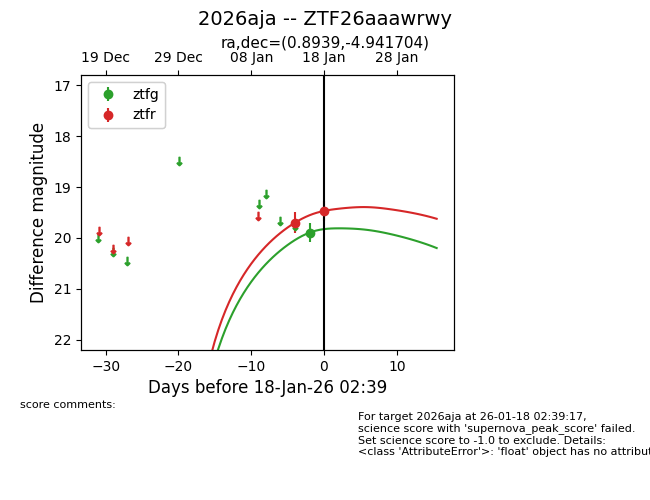
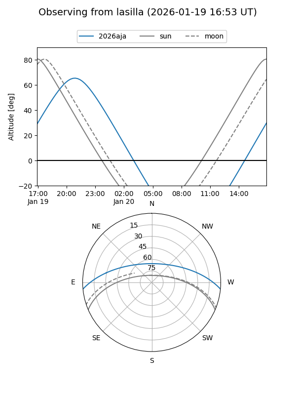
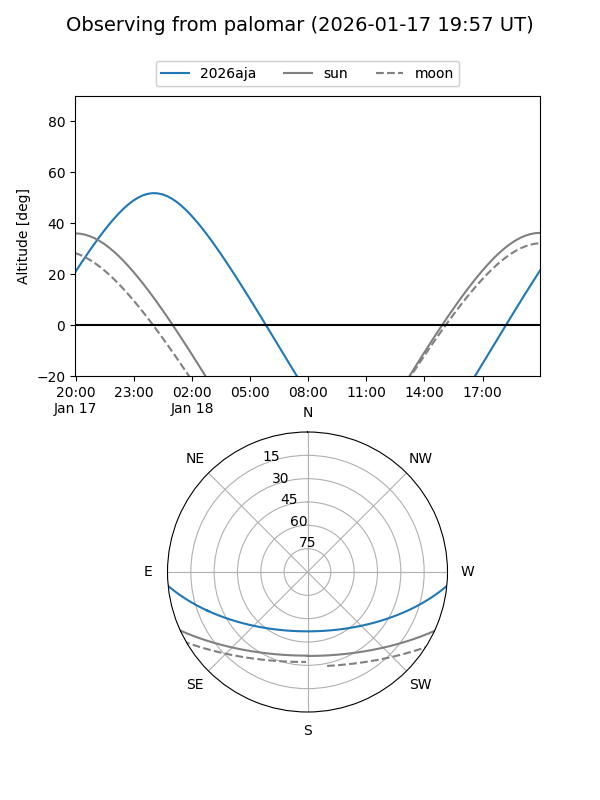
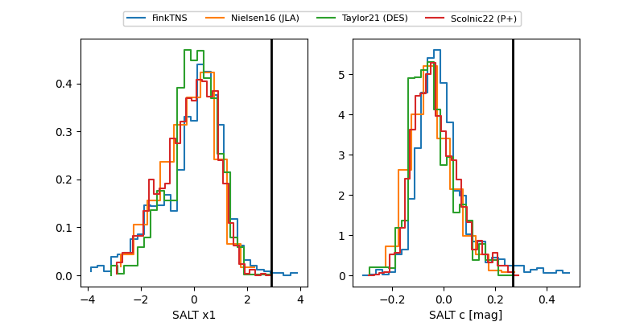

2026aja
Target 2026aja at 2026-01-20 05:51
Aliases and brokers:
FINK: link
Lasair: link
ALeRCE: link
TNS: link
YSE: link
alt names
ZTF26aaawrwy (ztf,fink_ztf)
2026aja (tns,yse)
Coordinates:
equatorial (ra, dec) = 0.8939,-4.94170
equatorial (HMS+DMS) = 00:03:34.53,-04:56:30.13
galactic (l, b) = (93.6105,-65.05237)
Flags:
Photometry:
last ztfg=19.90, ztfr=19.47
1 ztfg, 3 ztfr detections
Lightcurve

Visibility


Additional plots
